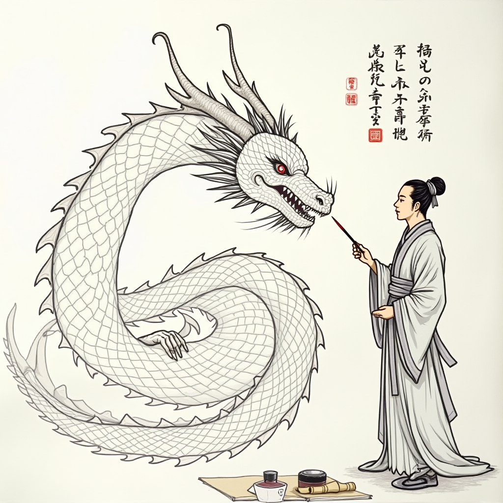

画龙点睛 - huà lóng diǎn jīng
含义：比喻说话或写文章在关键地方加上一两句话，使内容更加生动传神。
- 文生图：On a piece of white drawing paper, a giant dragon outlined with black lines is coiled. The scales of the dragon's body are clearly visible and the dragon's claws are sharp. The dragon's eyes were blank, and there stood a painter dressed in ancient costumes and elegant temperament, holding a brush in his hand, with the tip of the pen facing the dragon's eyes, as if ready to write at any time. The background of the picture has some classical calligraphy and painting scrolls and ink inkstones.

生成过程：首先用扣子上创建的智能体生成成语的含义和文生图提示词，然后用liblib文生图，最后创建网页